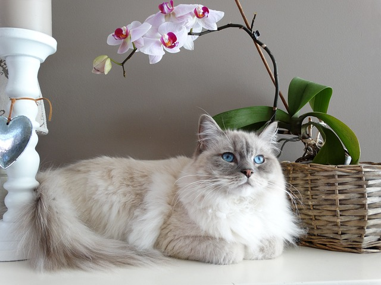
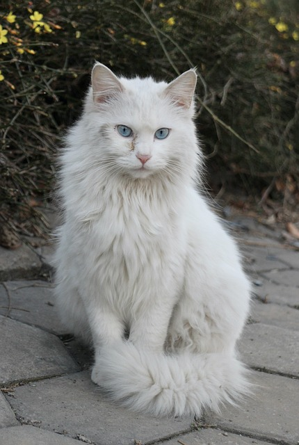
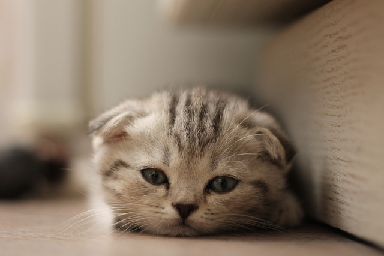
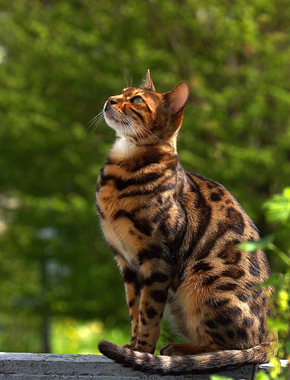

部分喵星人

布偶猫
温和友好，柔顺长毛，符合美女们的审美
玳瑁猫
也称”三花猫“，绝大部分为雌性，是猫界”美女“

土耳其安哥拉猫
体型中等，细腻光滑的长毛，眼睛大且明亮，为蓝色或绿色
缅因猫
大型喵种，具有浓密的中长毛，看似“高冷”，实则温和忠诚
暹罗猫
网友戏称其为”巡逻猫“、“逻辑猫”等，由于基因突变，有一部分的毛色会变黑（烧焦）

苏格兰折耳猫
具有耳朵向前折叠，外表可爱的特征，但它们通常是一个不健康的喵，请谨慎养它

金吉拉猫
豹猫和家猫的配种，身上迷人的豹纹深受人们喜欢，性格极野